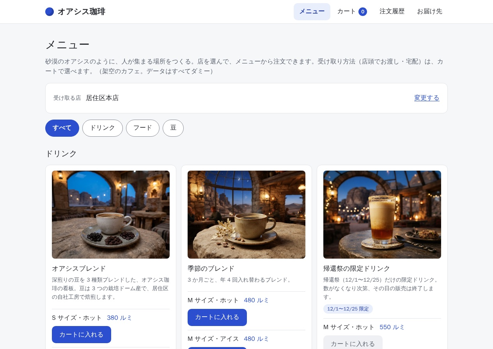
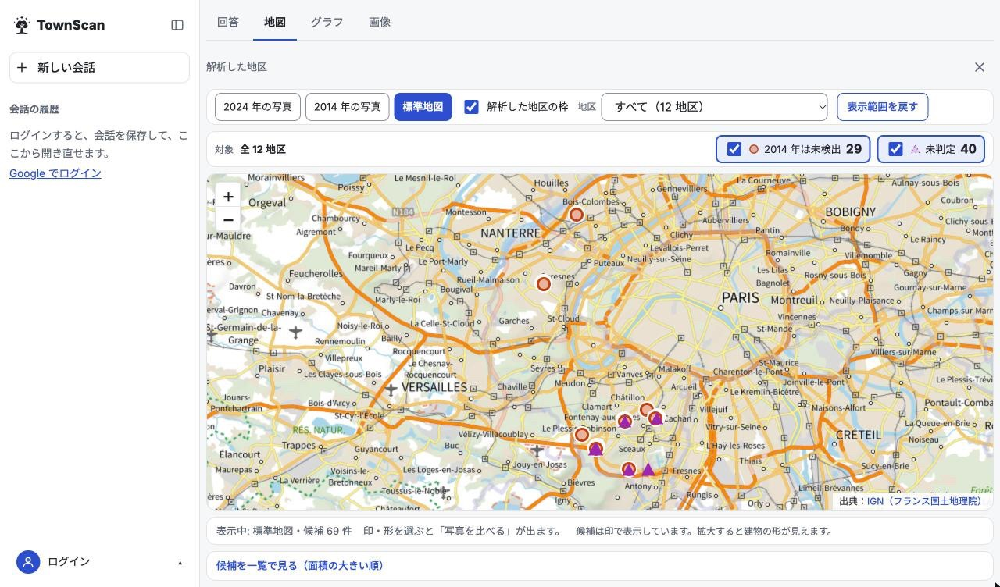
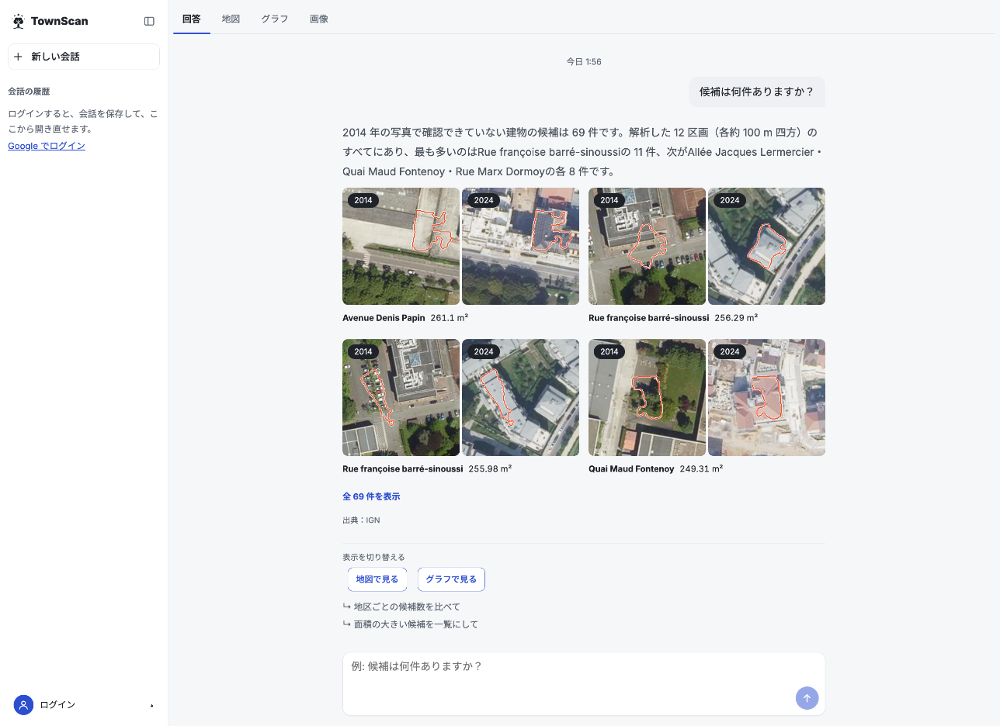

Starlight-Tree
English | 日本語Go・FastAPI・Next.js・Postgres で Web アプリを作っています。画面から API・DB・テストまで一続きで作り、設計の判断は文書（ADR）に残しています。
作品
ShopOrder・DocuNavi・JobNavi は、舞台が架空の世界（惑星ザーハード）のデモで、実在の店・人・文書は使っていません。TownScan は実在の空中写真を使います。
ShopOrder
架空のカフェチェーンの注文アプリです。お客様は店頭受け取りと宅配を注文し、店のスタッフは調理ボードと在庫を使い、店長は分析を見ます。在庫は追記だけの台帳で、同じ在庫を二重に売りません。


DocuNavi
PDF の文書から、出典つきで答える RAG チャットボットです。サンプル文書は架空です。

JobNavi
架空の惑星の植物園の求人サイトです。求人の検索と詳細の画面があります。

TownScan
パリ南西の近郊の 2014 年と 2024 年の空中写真から新築の候補を見つけ、質問に、短い文と 1 つの表示（写真・グラフ・地図）で答えるチャットアプリです。ローカルで動くたたき台で、精度は未測定です。

